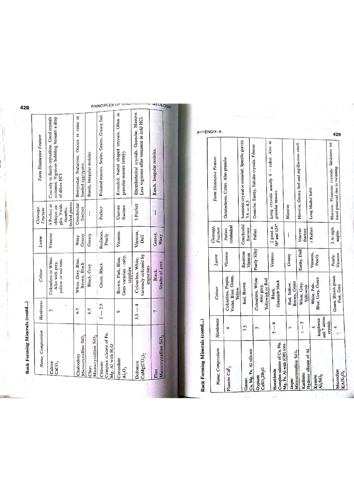

Q136: GIS Accuracy & Error Propagation: The Interdependence of Source Data and Encoded Processing
In Geographic Information Science (GIScience), spatial statistics, and digital geoinformatics, the ultimate accuracy, reliability, and precision of any GIS output product depends inextricably on both the quality of the Source Data and the fidelity of the Encoded Processing operations (Burrough & McDonnell, 1998; Goodchild & Gopal, 1989; Bangar, p. 221).

The Dual Determinants of GIS Accuracy
Standard spatial data quality frameworks (ISO 19157, FGDC Spatial Data Transfer Standard) categorize spatial errors into two interdependent domains:
-
1. Source Data Quality (Inherent / Input Errors):
Represents the intrinsic truth, resolution, and precision of the raw data before it enters any GIS operation:
- Positional Inaccuracy: Instrument errors in GPS/total station surveying, flight turbulence in photogrammetry, or paper shrinkage/stretching of historical mylar maps.
- Attribute Error: Incorrect mineralogical rock type labeling, misclassified soil units, or out-of-date tenure records.
- Temporal Obsolescence: Geological boundaries or stream shorelines mapped decades ago that have undergone natural erosion, mine excavation, or seismic displacement.
- Scale & Generalization Limits: Using a coarse $1 : 250,000$ regional map to assess site-specific engineering foundations introduces gross spatial generalizations.
-
2. Encoded Processing Operations (Operational / Algorithmic Errors):
Errors introduced, amplified, or propagated through computer algorithms during digital GIS data manipulation:
- Map Projection Transformations: Re-projecting between non-conformal or non-equivalent datums introduces angular and areal scale distortions.
- Raster Resampling & Cell Aggregation: Nearest-neighbor, bilinear, or cubic convolution resampling introduces radiometric blurring and positional shift.
- Topological Overlay & Slivers: Intersecting or unioning two polygon layers digitized at different times produces thousands of spurious, paper-thin "sliver polygons".
- Floating-Point Truncation: Computational rounding errors during complex spatial coordinate geometric intersections.

The Classical "Garbage In, Garbage Out" (GIGO) Reality
Even the most sophisticated, mathematically rigorous GIS processing pipeline cannot produce an accurate output if the input source data is erroneous or low-resolution:
Mathematical Formulation of Error Propagation
According to Gauss's law of error propagation, if a derived GIS attribute or spatial index $U$ is computed from independent source variables $x_1, x_2, \dots, x_n$ via an encoded mathematical transformation $U = f(x_1, x_2, \dots, x_n)$:
This equation mathematically proves that final error variance ($\sigma_U^2$) is the composite sum of source data variance ($\sum (\partial f / \partial x_i)^2 \sigma_{x_i}^2$) and operational processing variance ($\sigma_{\text{proc}}^2$).
| Quality Element | Governing Domain | Description & Criteria | Primary Evaluation Metric |
|---|---|---|---|
| Positional Accuracy | Source Data + Processing | Closeness of coordinate values to their true ground positions. | Root Mean Square Error ($\text{RMSE} = \sqrt{\frac{1}{N}\sum (\Delta X^2 + \Delta Y^2)}$). |
| Attribute Accuracy | Source Data | Correctness of quantitative and qualitative non-spatial descriptors. | Classification Error Matrix (Confusion Matrix), Cohen's Kappa ($\kappa$). |
| Logical Consistency | Encoded Processing | Fidelity of topological relationships (no unclosed polygons, no self-intersections, no overshoots). | Topological rule checks, Euler planar consistency. |
| Completeness | Source Data | Absence of omissions (unmapped features) or commissions (spurious excess features). | Percentage feature coverage against ground-truth census. |
| Lineage | Source Data + Processing | Detailed documentation of source materials, transformations, software versions, and human operators. | Formal XML metadata compliant with ISO 19139. |
- (A) Encoded processes
- (B) Source data
- (C) Both (A) and (B)
- (D) None of these
Encoded processes (the mathematical algorithms, projection equations, resampling methods, and topological intersection routines) directly govern operational accuracy. However, flawless algorithmic processing cannot compensate for inaccurate, coarse, or outdated source data. Selecting (A) alone is incomplete.
Source data quality (surveying precision, GPS accuracy, scale, attribute veracity) provides the baseline foundation of any GIS database. However, pristine source data can be severely degraded by improper geoprocessing choices (e.g., using an incorrect datum transformation, coarse rasterization, or careless tolerance snapping). Selecting (B) alone is incomplete.
In Geographic Information Systems literature (Bangar, p. 221; Burrough & McDonnell, Ch. 9; Chang, Ch. 14):
- Source Data: Determines the maximum theoretical limit of information content, resolution, and positional truth entering the system.
- Encoded Processes: Determines how faithfully that information is transformed, integrated, and modeled without introducing algorithmic distortion or cumulative error cascades.
Therefore, GIS accuracy depends inextricably on Both (A) and (B).
Asserting that accuracy depends on neither source data nor processing denies the basic mathematical and scientific principles of spatial analysis.
| Error Source | Category | Underlying Mechanism | Mitigation / Quality Control Strategy |
|---|---|---|---|
| Map Digitization Inaccuracy | Source Data | Operator hand tremors, mylar media stretching, paper folding. | Use high-resolution flatbed scanners, affine GCP rectification, automated vectorization. |
| Datum Misalignment | Encoded Process | Overlaying WGS 84 GPS points onto Everest 1830 topo sheets without 7-parameter Helmert transformation. | Standardize all spatial layers to a single common datum and projection before analysis. |
| Raster Grid Resampling | Encoded Process | Altering pixel cell size from $10\text{ m}$ to $30\text{ m}$ blurs sharp geological contacts. | Use cubic convolution or bilinear interpolation; retain finest native resolution. |
| Sliver Polygons | Encoded Process | Overlaying two independently digitized boundaries of the same fault or formation. | Define strict cluster snapping tolerances and execute automated sliver elimination filters. |
| Classification Error | Source Data | Misidentifying basalt as dolerite in remote sensing spectral classification. | Conduct field ground-truthing, calculate confusion matrix and kappa coefficient ($\kappa > 0.85$). |
A Digital Elevation Model (DEM) is used to calculate topographic slope: $S = \frac{\Delta Z}{L}$, where horizontal distance is $L = 100.0\text{ m}$ with zero error ($\sigma_L = 0$). The elevation difference is $\Delta Z = 25.0\text{ m}$ with a source DEM vertical standard error $\sigma_Z = \pm 1.5\text{ m}$. Calculate the standard error in the derived slope ($\sigma_S$) and express it as a percentage.
1. Differentiate slope equation with respect to $\Delta Z$: $$\frac{\partial S}{\partial (\Delta Z)} = \frac{1}{L} = \frac{1}{100.0\text{ m}} = 0.010\text{ m}^{-1}$$ 2. Apply Gauss error propagation formula: $$\sigma_S = \left|\frac{\partial S}{\partial (\Delta Z)}\right| \sigma_Z = 0.010 \times 1.5\text{ m} = 0.015 = 1.5\%$$ The calculated slope is $S = 25.0\% \pm 1.5\%$.
The United States National Map Accuracy Standards (NMAS) mandate that for a map scale of $1 : 50,000$, not more than $10\%$ of well-defined test points shall have a horizontal positional error exceeding $0.85\text{ mm}$ on the map sheet. Calculate the corresponding maximum permissible ground positional error in meters.
1. Calculate ground error: $$\text{Ground Error} = \text{Map Error} \times \text{Scale Denominator} = 0.85\text{ mm} \times 50,000 = 42,500\text{ mm} = 42.5\text{ meters}$$ At $1 : 50,000$, field test points must lie within $42.5\text{ meters}$ of their true ground coordinates.
A supervised satellite image classification maps $500\text{ test pixels}$ into three lithological classes. A field ground-truth confusion matrix is established: - Granite: $180\text{ correctly classified}, 15\text{ misclassified as Basalt}, 5\text{ as Sandstone}$. - Basalt: $140\text{ correctly classified}, 10\text{ misclassified as Granite}, 10\text{ as Sandstone}$. - Sandstone: $120\text{ correctly classified}, 12\text{ misclassified as Granite}, 8\text{ as Basalt}$. Calculate the Overall Accuracy of the classified geological map.
1. Sum of correctly classified diagonal pixels: $$\sum_{\text{correct}} = 180 + 140 + 120 = 440\text{ pixels}$$ 2. Total evaluated pixels: $$N = 500\text{ pixels}$$ 3. Overall Classification Accuracy: $$\text{Overall Accuracy} = \left(\frac{440}{500}\right) \times 100\% = 88.0\%$$
From the classification in Problem 3, the observed overall agreement is $P_o = 0.880$. Statistical calculation of chance agreement based on row and column marginal totals gives $P_e = 0.345$. Calculate Cohen's Kappa Coefficient ($\kappa$) and assess the classification reliability.
1. Calculate Cohen's Kappa formula: $$\kappa = \frac{P_o - P_e}{1 - P_e} = \frac{0.880 - 0.345}{1 - 0.345} = \frac{0.535}{0.655} \approx 0.8168$$ 2. Assessment: According to Landis & Koch (1977), $\kappa > 0.80$ represents "Almost Perfect / Strong Agreement" above chance, confirming high attribute quality.
A GPS point surveyed in WGS 84 datum is directly plotted onto an Indian toposheet referenced to the historical Everest 1830 datum without applying the 7-parameter Helmert transformation. The shift in Easting is $\Delta X = +62\text{ m}$ and in Northing is $\Delta Y = +215\text{ m}$. Calculate the resulting planimetric positional error vector in meters.
1. Calculate vector magnitude: $$\text{Error} = \sqrt{\Delta X^2 + \Delta Y^2} = \sqrt{(62)^2 + (215)^2} = \sqrt{3844 + 46,225} = \sqrt{50,069} \approx 223.76\text{ meters}$$ Omitting the datum transformation introduces an operational processing error of over $223\text{ meters}$!
A GIS overlay operation (Union) is performed between two independent geological surveys of a $50\text{ km}$ fault zone. Due to a digitizing positional difference of $\sigma = 4.0\text{ m}$, the overlay generates 140 spurious sliver polygons with an average width of $3.5\text{ m}$ and average length of $300\text{ m}$. Calculate the total artificial error area generated by sliver polygons in hectares.
1. Area of one average sliver polygon: $$A_{\text{sliver}} = 3.5\text{ m} \times 300\text{ m} = 1050\text{ m}^2$$ 2. Total area of 140 sliver polygons: $$A_{\text{total}} = 140 \times 1050\text{ m}^2 = 147,000\text{ m}^2$$ Convert to hectares: $$A_{\text{total}} = \frac{147,000\text{ m}^2}{10,000\text{ m}^2\text{/ha}} = 14.70\text{ hectares}$$ Topological snapping filters must be applied to eliminate these $14.7\text{ hectares}$ of fictitious slivers.
According to the Shannon-Nyquist sampling theorem in spatial data capture, to reliably resolve a geological narrow feature of minimum linear dimension $W_{\text{min}} = 10.0\text{ m}$ (e.g., an ore vein or dyke), the maximum allowable raster grid cell size ($\Delta x$) must be no greater than half the feature dimension: $$\Delta x \le \frac{W_{\text{min}}}{2}$$ Calculate the maximum permissible raster cell size and state the consequence if a $15\text{ m}$ cell size is chosen.
1. Maximum permissible cell size: $$\Delta x \le \frac{10.0\text{ m}}{2} = 5.0\text{ meters}$$ 2. Consequence of $15\text{ m}$ cell size: If a $15\text{ m}$ cell size is used, spatial aliasing occurs; the $10\text{ m}$ vein will be averaged with surrounding wall rock pixels, losing its continuous geometric continuity and causing false breaks in the mapped ore body.
In a least-cost-path pipeline for an ore haulage road, a cost raster of cell size $20\text{ m} \times 20\text{ m}$ assigns an average impedance cost per cell with an individual uncertainty of $\pm 5\%$. If the optimal route traverses $1600\text{ cells}$, and cell errors are independent and random, calculate the percentage relative error in the accumulated total route cost ($E_{\text{route}} = \sigma / \sqrt{N}$).
1. Apply the standard error of the sum for $N$ independent identical random variables: $$\sigma_{\text{sum}} = \sqrt{N} \times \sigma_{\text{cell}} = \sqrt{1600} \times 5\% = 40 \times 5\% = 200\%$$ 2. Relative percentage error of the total accumulated sum: $$\text{Relative Error } (\%) = \frac{\sigma_{\text{sum}}}{N \times \mu_{\text{cell}}} = \frac{\sigma_{\text{cell}}}{\sqrt{N}} = \frac{5\%}{\sqrt{1600}} = \frac{5\%}{40} = 0.125\%$$ Due to statistical averaging over long traverses, independent random errors cancel out, resulting in a negligible $0.125\%$ relative error in total path cost.